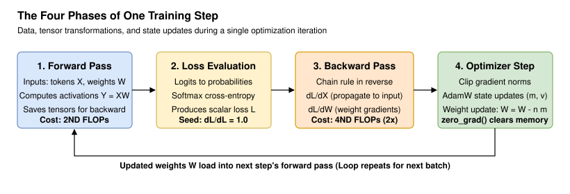
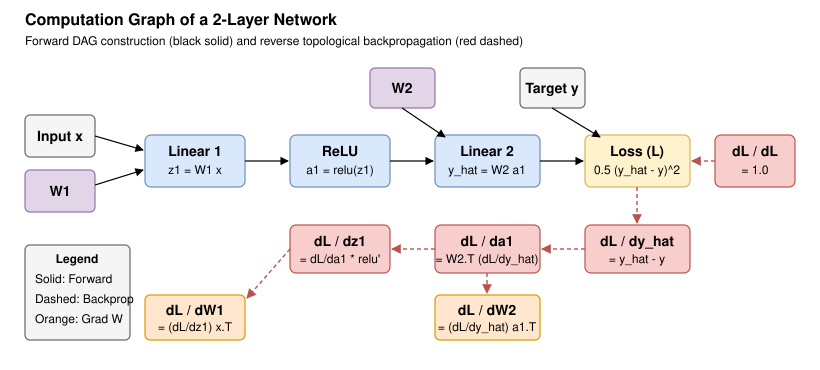
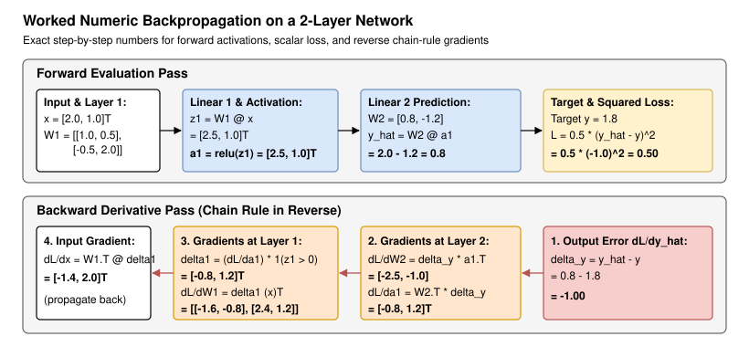
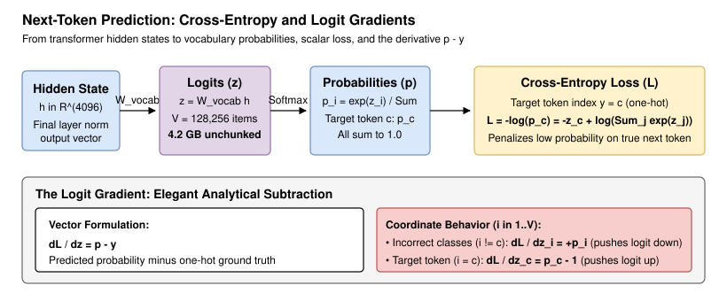
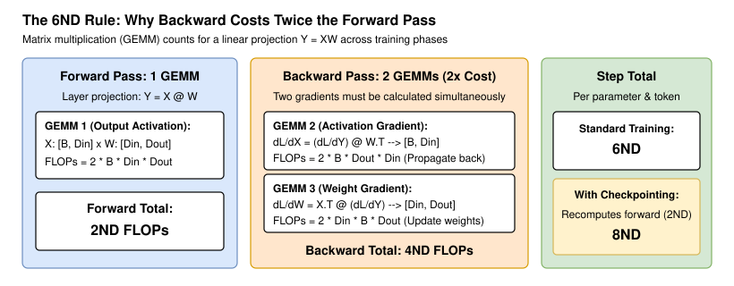
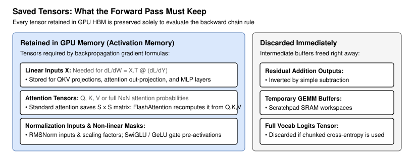

Forward and Backward Passes
Introduction
Every step of neural network training boils down to an orchestration of four sequential phases: evaluating a candidate prediction through a forward pass, measuring prediction discrepancy via a loss function, calculating exact parameter gradients by reversing the computation through backpropagation, and adjusting weights using an optimization rule [1]. While inference executes only the forward pass and discards intermediate results as soon as each layer finishes, training is bound by the mathematical demands of the backward pass. Backpropagation requires access to the intermediate activations generated during the forward pass to compute parameter gradients, forcing the system to store gigabytes of transient state across every layer of the model [2].
Furthermore, training exhibits a fundamental computational asymmetry: the backward pass costs roughly twice the floating-point operations (FLOPs) of the forward pass. For a standard linear projection, the forward pass performs a single matrix multiplication to project input activations into output representations. The backward pass, however, must perform two distinct matrix multiplications: one to backpropagate the error gradient to preceding layers, and a second to compute the gradient with respect to the layer weights [3]. This reality establishes the canonical 6ND rule of language model pretraining—each token requires approximately FLOPs per step ( forward and backward for parameters and tokens), rising to when activations are recomputed to save GPU memory [4].

In this lesson, we examine the mathematical foundations and systems engineering of the forward and backward passes. We walk through a hand-calculated numeric backpropagation example on a two-layer network, analyze how next-token cross-entropy loss behaves across high-dimensional vocabularies, prove why the backward pass requires twice the compute of the forward pass, and dissect PyTorch autograd mechanics and gradient accumulation during large-scale pretraining.
Clarifying the Problem
In infrastructure and machine learning systems interviews, questions regarding forward and backward passes evaluate whether a candidate understands how calculus translates into GPU memory buffers, matrix multiplication kernels, and distributed step latencies. Here is a typical exchange between a candidate and an interviewer:
Candidate: What model architecture, batch size, and hardware configuration are we sizing for this pretraining run?
Interviewer: We are pretraining a model with the Llama 3.1 8B architecture—32 layers, hidden dimension 4,096, 32 query heads, 8 key-value heads, and a vocabulary size of 128,256, totaling 8.03 billion parameters. Our cluster has 256 NVIDIA H100 80 GB SXM GPUs arranged across 32 nodes connected by 400 Gb/s InfiniBand NDR interconnects.
Candidate: What is the sequence length and target global batch size per optimization step?
Interviewer: The sequence length is 8,192 tokens. The global batch size is 512 sequences, which amounts to approximately 4 million tokens (4,194,304 tokens) per optimizer update.
Candidate: Can a single GPU execute the forward and backward passes for multiple 8,192-token sequences simultaneously without running out of memory?
Interviewer: No. Storing the uncheckpointed activations of even two 8,192-token sequences exceeds the available memory on an 80 GB GPU. We must use a per-device micro-batch size of one sequence and accumulate gradients across micro-batches.
Candidate: Are we using full activation recomputation, or are we retaining intermediate tensors in memory?
Interviewer: We want you to analyze both cases. What are the exact FLOP counts and step times under standard training versus full activation checkpointing, assuming a realistic target of 40% Model FLOPs Utilization (MFU)?
Candidate: Does calculating the cross-entropy loss over a 128,256-token vocabulary create a memory or compute bottleneck on the GPU?
Interviewer: That is a critical point. Storing the unchunked logit tensor for 8,192 tokens consumes gigabytes of high-bandwidth memory. Explain how the loss and its gradient are computed efficiently.
The question underneath is: How do we map the mathematical chain rule onto modern GPU hardware, budget the computational FLOPs and transient memory buffers for an 8B model, and coordinate micro-batch execution to maintain 40% hardware efficiency? To answer it, we begin with the core mechanics of backpropagation.
The Mechanics of Backpropagation
The computation graph
Modern deep learning frameworks represent mathematical expressions as a directed acyclic graph (DAG) known as a computation graph [2]. In this graph, leaf nodes represent input data tensors or learnable model parameters (weights and biases). Internal nodes represent mathematical operations, such as matrix multiplications, bias additions, layer normalizations, or non-linear activation functions. Directed edges represent the flow of multi-dimensional arrays (tensors) between operations.

During the forward pass, the framework traverses the graph in topological order, executing GPU kernels to compute intermediate tensors until it evaluates the scalar loss . When an operation executes, PyTorch records an internal backward node (a subclass of torch.autograd.Function) containing the recipe for computing vector-Jacobian products for that operation. During the backward pass, the framework traverses this graph in exact reverse topological order, seeding the root with and propagating gradients backward toward the parameters.
The chain rule in reverse
Consider a composite function where an input undergoes a sequence of transformations , , producing output evaluated by scalar loss . According to the multivariable chain rule of calculus, the sensitivity of the loss with respect to the input is the product of intermediate Jacobians:
In forward-mode automatic differentiation, derivatives are evaluated from left to right (from inputs toward outputs). For a neural network with parameters and a single scalar loss , forward-mode differentiation would require separate forward sweeps through the graph, scaling proportionally to parameter count. In reverse-mode automatic differentiation (backpropagation), derivatives are evaluated from right to left (from the scalar loss back toward the parameters). Because the output is a single scalar (), a single reverse sweep computes the exact gradient with respect to all parameters simultaneously [1].
Worked numeric example: a two-layer network by hand
To demystify backpropagation, let us trace a complete numeric forward and backward pass on a concrete, two-layer bias-free network small enough to verify with paper and pencil. Let the input vector be , the first weight matrix be , the activation function be a rectified linear unit (), the second weight vector be , and the target scalar be :
1. Forward pass evaluation
First, compute the linear projection of Layer 1:
Next, apply the elementwise ReLU activation function . Because both components of are positive:
Next, compute the linear projection of Layer 2 to produce prediction :
Finally, evaluate the mean squared error loss :

2. Backward pass backpropagation
Now we execute the chain rule in reverse, starting from the loss:
Step 1: Output error gradient. Differentiate the loss with respect to prediction :
Step 2: Gradients at Layer 2. Differentiate with respect to weight vector and hidden activation :
Notice the critical systems insight: computing requires the forward activation . If the GPU had freed after the forward pass, it could not calculate the weight gradient.
Step 3: Gradients through ReLU. The derivative of ReLU is the unit step function . Multiplying elementwise:
Step 4: Gradients at Layer 1. Differentiate with respect to weight matrix and input vector :
Every number aligns with machine precision. The outer product demonstrates why computing the parameter gradient strictly depends on retaining the input tensor in memory.
Next-Token Prediction and Cross-Entropy Loss
The language modeling objective
Modern autoregressive large language models are trained using self-supervised next-token prediction. Given an input sequence of discrete token indices , the joint probability distribution decomposes via the probability chain rule:
At each sequence position , the transformer backbone outputs a normalized continuous representation . The language model head projects this vector across the entire vocabulary of size using embedding weight matrix to produce raw unnormalized logits :
The softmax function converts these logits into a valid categorical probability distribution over the vocabulary:
Given ground-truth target token index , the training objective minimizes the cross-entropy loss, which corresponds to the negative log-likelihood of the correct token:

The gradient w.r.t. logits:
To backpropagate through the loss, we calculate the partial derivative of with respect to any arbitrary logit . Using calculus on the expanded log-sum-exp expression:
The first term equals if and otherwise, written compactly using the indicator function . In the second term, only the term has a non-zero derivative, yielding :
In vector notation, where is represented as a one-hot vector with 1 at the target index, this gradient simplifies to:
This result provides deep intuition: the error signal feeding into the backward pass is simply the difference between the model's predicted probability distribution and the true ground-truth distribution. For every incorrect token (), the gradient is positive (), pushing its logit downward during gradient descent. For the target token (), the gradient is negative (), driving its logit upward.
The memory bottleneck of large vocabularies
While the mathematical form is simple, its physical materialization on GPUs represents a notorious memory bottleneck. In Llama 3.1 8B, the vocabulary size is . For a micro-batch of with sequence length , the logits tensor contains:
Because softmax and cross-entropy require full 32-bit floating-point precision to prevent numerical overflow in the exponent sum, storing this unchunked logit tensor requires of memory for a single sequence. Storing the corresponding probability tensor and backward gradient adds another 8.4 GB, consuming over 12 GB of GPU High Bandwidth Memory (HBM) purely for the loss calculation.
To eliminate this waste, modern pretraining stacks employ chunked cross-entropy (or fused loss kernels such as Liger-Kernel or FlashCrossEntropy). Instead of materializing the entire logit tensor in HBM, the sequence dimension is divided into smaller chunks (for example, 512 tokens). For each chunk, the GPU projects hidden states to logits, computes the softmax reduction, evaluates the loss, immediately calculates the backward gradient , backpropagates into the hidden state gradient , and discards the logit chunk. This reduces peak loss memory from 4.2 GB down to less than 270 MB without altering mathematical results.
Why the Backward Pass Costs Twice the Forward Pass (6ND Rule)
The anatomy of a linear layer
The core computational primitive in transformers is the general matrix multiplication (GEMM). Consider a standard feed-forward or projection layer with weight matrix operating on an input activation tensor , where represents the total batch tokens:
Computing each scalar element of requires an inner product between a row of (length ) and a column of (length ), which entails multiplications and floating-point operations. Because has elements, the forward pass compute is:

During the backward pass, backpropagation receives the upstream loss gradient . To complete the step, the layer must calculate two separate tensor derivatives:
- Gradient with respect to input activations (): To propagate error signals backward to earlier layers, the framework multiplies incoming gradients by the transposed weight matrix: This GEMM produces a tensor. Its computational cost is FLOPs.
- Gradient with respect to layer weights (): To update the model's parameters, the framework multiplies the transposed input activations by the incoming gradients: This GEMM produces a parameter gradient tensor. Its computational cost is FLOPs.
Summing the two backward operations yields:
Because the backward pass must evaluate two full matrix multiplications for every forward matrix multiplication, the backward pass requires exactly twice the compute of the forward pass. Combining the forward and backward passes gives the fundamental 6ND scaling rule formulated by Kaplan et al. [3] and Hoffmann et al. [4]:
where is the non-embedding parameter count and is the number of tokens processed in the batch (explored thoroughly in Lesson 7, Training FLOPs, Time and MFU).
Full activation recomputation (8ND)
In standard training, intermediate activations are retained in GPU memory from the forward pass until their corresponding backward GEMM executes. However, as derived in Lesson 3 (Training Memory), for long sequences (such as 8,192 tokens), storing activations across all 32 layers requires hundreds of gigabytes of HBM, creating an immediate Out-Of-Memory (OOM) crash [5].
To eliminate this activation memory, systems use activation checkpointing (also called gradient checkpointing). Instead of saving all intermediate tensors, the forward pass saves only the inputs at the boundaries of each transformer layer (or block). During the backward pass, when backpropagation reaches a layer, it re-executes the forward pass for that layer from its cached input, regenerating the intermediate activations immediately before computing and [5].
Re-executing the forward pass adds an extra FLOPs of compute to the training step:
Activation recomputation incurs a 33.3% computational overhead (). In exchange, it slashes activation memory by over 90%, making it possible to train modern 8K-context models on standard hardware.
Saved activations: what the forward pass must keep
Figure 6 categorizes which tensors must be preserved in HBM when activation recomputation is not applied across every sub-operation.

Table 1 details the exact mathematical role and retention requirement for tensors across a transformer layer.
| Operation | Saved Forward Tensor | Size per Layer () | Role in Backward Pass |
|---|---|---|---|
| Q, K, V Projections | Pre-norm input | 67.1 MB (BF16) | Evaluates for Q, K, V weights |
| Attention Scores | (or matrix) | 201.3 MB (BF16) | FlashAttention uses + softmax stats to recompute attention in SRAM [6] |
| Out Projection | Attention context | 67.1 MB (BF16) | Evaluates |
| RMSNorm / LayerNorm | Normalized input and RMS scale | 67.1 MB (BF16) | Backpropagates through normalization Jacobian |
| SwiGLU MLP | Gate and Up projection inputs | 470.0 MB (BF16) | Evaluates weight gradients for |
| Residual Addition | None (discarded) | 0 MB | Residual derivative is an identity pass-through: |
Table 1: Activation tensors retained during the forward pass for backpropagation
Which activation retention strategy fits our run?
For pretraining Llama 3.1 8B with sequence length 8,192 on our 256 H100 cluster, uncheckpointed activation storage requires approximately 380 GB per GPU—exceeding device memory by nearly 5×. Conversely, full activation checkpointing adds 33% compute overhead (). The optimal strategy is selective activation checkpointing combined with FlashAttention-3 [6]. FlashAttention never writes the attention score matrix to HBM, eliminating the quadratic memory term entirely. We checkpoint only the large MLP feed-forward blocks while retaining attention linear projections. This reduces activation memory to under 28 GB per GPU, fitting comfortably within the 80 GB budget while avoiding the full 33% FLOP penalty.
Autograd and Gradient Accumulation in PyTorch
How PyTorch Autograd works
PyTorch features an tape-based automatic differentiation engine called autograd [2]. When a tensor with requires_grad=True participates in an operation, autograd dynamically allocates a node in the computation graph. Each tensor exposes a .grad_fn attribute referencing the backward operation that created it.
When the user invokes loss.backward(), autograd performs the following steps:
- Executes a topological sort starting from the loss tensor's
.grad_fnto establish backward evaluation order. - Iteratively executes each node's vector-Jacobian product kernel, streaming intermediate gradients to predecessor nodes.
- Accumulates parameter gradients into the
.gradattribute of leaf tensors using in-place addition:In distributed data parallel setups (Lesson 10, Data Parallelism and All-Reduce), calling
model.no_sync()during the first micro-batches prevents unnecessary gradient communication across the InfiniBand network, triggering the collective all-reduce only on the final micro-batch.What does one step of our run cost?
Now we evaluate the exact computational budget for a single global step of our pretraining cluster. Table 2 summarizes the arithmetic for Llama 3.1 8B () on 256 H100 GPUs with a global batch of tokens (512 sequences of 8,192 tokens).
Metric Standard Training (6ND) Full Recomputation (8ND) Derivation / Formula Global Batch FLOPs (202.1 PFLOPs) (269.4 PFLOPs) vs Compute per GPU (256 GPUs) Total FLOPs divided by 256 devices Tokens per GPU per Step 16,384 tokens (2 sequences) 16,384 tokens (2 sequences) H100 Effective Throughput (40% MFU) Step Time (Wall-Clock) Compute per GPU Total Steps for 1T Tokens 238,419 steps 238,419 steps Total Pretraining Time Steps Step Time (approx 33,800 GPU-hours for 6ND) Table 2: Computational and wall-clock breakdown for one pretraining step
At 40% MFU, each step takes exactly 2.00 seconds under the standard 6ND regime. Over a 1-trillion-token pretraining run (238,419 global steps), the cluster completes training in approximately 5.5 days (33,800 GPU-hours). At an assumed cloud cost of $3.00 per H100-hour, the run costs approximately $101,000 [7].
In Practice
The first tab demonstrates PyTorch autograd internals: inspecting gradient functions, tracking graph connections, verifying leaf node accumulations, and measuring the memory impact of disabling autograd. The second tab provides a complete, runnable training loop from scratch for a causal transformer, incorporating next-token cross-entropy, gradient accumulation, gradient norm clipping, and the optimizer step.
Autograd mechanicsTraining loop from scratchimport torch import torch.nn as nn # 1. Inspecting the dynamic computation graph x = torch.tensor([2.0, 1.0], requires_grad=True) W1 = torch.tensor([[1.0, 0.5], [-0.5, 2.0]], requires_grad=True) W2 = torch.tensor([0.8, -1.2], requires_grad=True) y_target = torch.tensor(1.8) # Forward pass z1 = W1 @ x a1 = torch.relu(z1) y_hat = W2 @ a1 loss = 0.5 * (y_hat - y_target) ** 2 print("Loss value:", loss.item()) # 0.50 print("Loss grad_fn:", loss.grad_fn) # <MulBackward0> print("y_hat grad_fn:", y_hat.grad_fn) # <DotBackward0> print("a1 grad_fn:", a1.grad_fn) # <ReluBackward0> # Backward pass loss.backward() # Verify exact hand-calculated gradients from text print("\n--- Verified Gradients ---") print("dL/dW2:", W2.grad.tolist()) # [-2.5, -1.0] print("dL/dW1:\n", W1.grad.tolist()) # [[-1.6, -0.8], [2.4, 1.2]] print("dL/dx:", x.grad.tolist()) # [-1.4, 2.0] # 2. Demonstrating in-place gradient accumulation loss2 = 0.5 * (W2 @ torch.relu(W1 @ x) - y_target) ** 2 loss2.backward() print("\nAccumulated dL/dW2 without zero_grad:", W2.grad.tolist()) # [-5.0, -2.0] # 3. Demonstrating set_to_none=True optimizer = torch.optim.SGD([W1, W2], lr=0.01) optimizer.zero_grad(set_to_none=True) print("W2.grad after zero_grad(set_to_none=True):", W2.grad) # NoneOther Talking Points
If there is extra time at the end of the interview, here are some additional talking points:
- Loss scaling in mixed precision: When executing backward passes in FP16, small gradient values underflow to zero. While BF16 has an 8-bit exponent matching FP32 and avoids scaling, FP16 requires dynamic loss scaling to shift gradients into representable range (detailed in Lesson 5, Mixed Precision Training - BF16 and FP8).
- Gradient checkpointing re-entrant vs non-reentrant: Early PyTorch implementations used re-entrant autograd checkpointing, which had issues with hooks and early tensor deallocation. Modern PyTorch uses
torch.utils.checkpoint.checkpoint(use_reentrant=False), which integrates natively with autograd graph execution. - Fused cross-entropy and loss-head kernels: Chunking the cross-entropy projection across vocabulary dimensions avoids ever writing full logit tensors to HBM, saving up to 4 GB of activation memory per stream in Llama 3 models.
- Double backward and gradient penalties: Certain regularization methods (such as gradient penalty in WGANs or Hessian-vector products) require differentiating through the backward graph itself, requiring
create_graph=Trueduring the first backward call. - Overlap of backward compute and collective communication: In Distributed Data Parallel (DDP), gradient all-reduce communication overlaps asynchronously with the backward pass of earlier layers via backward hooks, hiding inter-node communication latency (Lesson 10, Data Parallelism and All-Reduce).
- Memory profiling with PyTorch profiler: Using
torch.profiler.profile(with_stack=True, profile_memory=True)lets engineers inspect exact allocation and deallocation events for intermediate activations throughout the forward-backward cycle.
Summary
- A single training step consists of four sequential phases: forward activation evaluation ( FLOPs), loss evaluation against vocabulary targets, backward backpropagation ( FLOPs), and master weight optimization.
- The backward pass costs twice the forward pass because each linear layer requires two matrix multiplications: one to propagate gradients to inputs (), and one to calculate parameter updates ().
- Standard training requires approximately FLOPs per token, which increases to when full activation checkpointing re-evaluates the forward pass during backpropagation.
- Backpropagation through next-token cross-entropy yields the gradient , pushing probability mass directly toward the target token. Large vocabularies (128,256) require chunked cross-entropy to avoid gigabytes of transient logit allocations.
- PyTorch autograd dynamically constructs an evaluation graph and accumulates gradients into
.gradbuffers via in-place addition, requiringoptimizer.zero_grad(set_to_none=True)between global steps. - On 256 NVIDIA H100 GPUs, pretraining Llama 3.1 8B with a 4M-token global batch takes 2.00 seconds per step at 40% MFU, completing a 1-trillion-token run in 5.5 days (33,800 GPU-hours).
Reference Material
[1] Rumelhart et al. Learning representations by back-propagating errors. https://doi.org/10.1038/323533a0.
[2] Paszke et al. PyTorch: An Imperative Style, High-Performance Deep Learning Library. https://arxiv.org/abs/1912.01703.
[3] Kaplan et al. Scaling Laws for Neural Language Models. https://arxiv.org/abs/2001.08361.
[4] Hoffmann et al. Training Compute-Optimal Large Language Models. https://arxiv.org/abs/2203.15556.
[5] Korthikanti et al. Reducing Activation Recomputation in Large Transformer Models. https://arxiv.org/abs/2205.05198.
[6] Dao et al. FlashAttention: Fast and Memory-Efficient Exact Attention with IO-Awareness. https://arxiv.org/abs/2205.14135.
[7] Llama 3 Team, Meta. The Llama 3 Herd of Models. https://arxiv.org/abs/2407.21783.
![ask alex]()
![ask alex expend]()